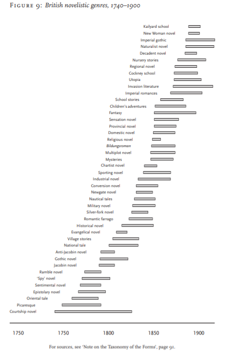
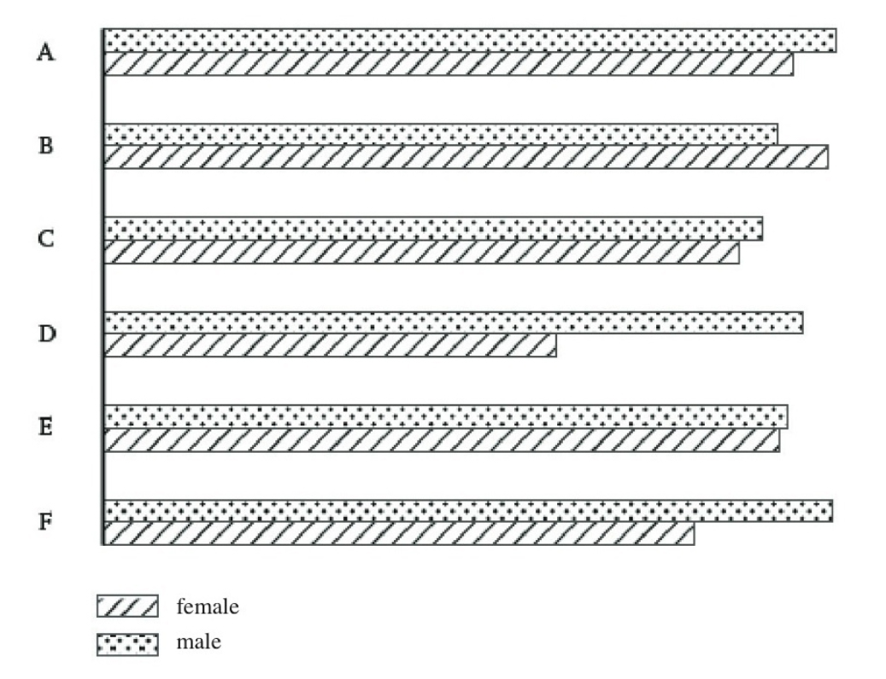
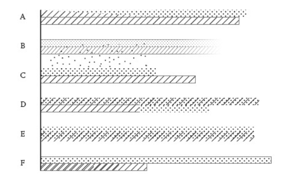

Introduction
Digital humanities scholarship and scholarship in the sciences are difficult to separate and/or distinguish from each other. Moretti and Drucker’s readings are clear examples of attempts created to advance the differentiation between the two scholarships. The next generation of digital humanities scholarships will be heavily influenced by not only the readings such as Moretti and Drucker’s, but also the defining of what digital humanities scholarships is and what it entails as it progresses through this modern age of technology. This blog will discuss how the two readings mentioned above have aided in defining the digital scholarships; how todays technology has influenced the direction; and the progression of future outcomes.
The Breakthrough
Franco Moretti and Johanna Drucker both discuss about cultural phenomena through the representation of visual forms. Though the papers do not mention about completely changing the way digital scholarship should be operated, they have created a huge shift on the analyzation of data aspect. They brought ideas that were different and proceed to reuse and reinvent ways of representing their ideas data. However, that is where the similarities end and thus their papers become highly contrasting.
Through Moretti’s paper we have a clear understanding of what he is trying to portray. The use of graphs, maps and trees to display a wider variety of data collected, in the case of his paper it was the cultural shifts. Choosing different parts of the world and comparing the publication dates of novels on graphs and later goes on to plot different genres that appeared throughout certain time periods alongside their popularity duration. It was evident that throughout the paper, Moretti have used various models to get his point across about data representation which is the reason he seems to be have created a large impact within the digital humanities.
Here is one of Moretti's charts listing genres and the percpective relevancy throughout a certain time period.
Johanna Drucker seems to have a more complex way of displaying data. Her approach is to graph capta which can then easily turn into a new type of graph. Unlike Moretti who reused existing graphs to plot his data, Drucker reinvents them using capta which is data but taking it and looking at it subjectively. “Data are capta, taken not given, constructed as an interpretation of the phenomenal world, not inherent in it” (Drucker, para. 8). Essentially, Drucker is reinventing the wheel by using and taking existing visual aids (i.e. graphs, charts, tables, etc…) which are meant to display data by breaking it to allow us to interpret the graphs true meaning using capta.
Here is the a graph of untouched data collected and portrayed in as one of Drucker's examples.
Here is the a graph again but reinterpreted using capta.
The Analyzation Cycle
In todays technology, there are many programs that can aid text analyzation; for example, Voyant-Tools, StoryMapJS, Scalar, etc… In respects of the two authors, by using the trends tool built within Voyant, we can compare the two documents and analyze even further in our own way.
If the graph information does NOT appear input: Data, Interpretation, Culture, Graph
In the graph above, we can see 4 term that have been inputted; 2 frequent terms, data and interpretation; and 2 other terms that relate to their papers, culture and graph. Perceptively, paying no mind to the scale differences between the two pieces, we can see the relative frequencies of each term.
Between the 2 frequent terms, data plays a major part for their papers. This is important to note because in order to graph or provide visual aids to research, data must be collected and thus the frequency of the term throughout each of the papers is a massive factor. Moving on to interpretation, it is evident that Drucker has a frequency similar to her data term due to the fact that is what her paper is all about oppose to Moretti. This understanding shows that Drucker is trying to approach data in a more unconventional way which is what made her a massive topic about the way digital scholarship should be shaped.
Looking at the other 2 terms, culture and graph, though not being as giant as the previous 2 these terms are quite even. Culture plays a subtle yet important role as both papers are trying to document information about culture. The same applies to the term graph as the whole point is to provide some visual representation ranging from a formal graph like Moretti or an informal graph like Drucker.
To The Future!
Digital humanities are a complete mixed bag filled with different talents and digital scholarship is one of them. However, digital scholarship may be solidified as to what it may end up being in a near future but that does not stop technology from advancing and as every year that passes digital scholarship can possibly be the future of researching. “The screen expands the possibilities for how humanists demonstrate evidence and proves especially valuable as a space for visual representations and visualizations. The screen also affords new options for what humanists can make, beyond what is possible with print” (Staley, para. 8). To conclude, digital scholarship and scholarship in the science does not have a fine line drawn between the two, however the future holds an endless amount of possibilities. The fact that there are people trying to help define this line such as Moretti and Drucker, only give hope to what we can expect.